Deploy from anywhere. Name your destination, step through.
avelor-es/flooIn the wizarding world, the Floo Network connects thousands of fireplaces across Britain. A witch or wizard steps into the flames, speaks the name of their destination, and arrives moments later — no matter the distance.
Muggle servers present a similar predicament. You have a machine somewhere in the world
and need to deliver fresh code to it. floo solves this the wizarding way:
an agent runs on your server, waiting. You speak the project name from your machine
or CI pipeline, and the deploy happens. Logs stream back in real time.
No Docker. No Kubernetes. No monthly subscription to a platform that does too much.
Just a fireplace on each end.
Install
$ brew install avelor-es/floo/floo
$ npm install -g @avelor/floo
$ npx @avelor/floo myapp
Quickstart
$ floo add project # interactive wizard $ floo token issue --project myapp $ floo agent install # systemd service, starts on boot
$ floo use myapp https://your-server:4001 fl_yourtoken $ floo myapp # logs stream in real time, exits 0 or 1
GitHub Actions
avelor-es/floo-action
is available in the GitHub Marketplace. Add FLOO_URL and FLOO_TOKEN as repository secrets, then:
- uses: avelor-es/floo-action@v1 with: project: myapp url: ${{ secrets.FLOO_URL }} token: ${{ secrets.FLOO_TOKEN }}